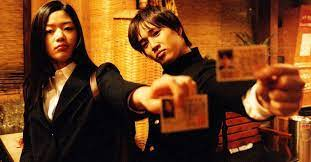

종합비타민과
아이크림

오랜만에 모인 중학교 친구들, 하하호호 실컷 수다를 떤다. 중학생 때 못지 않은 여전한 텐션. 들뜬 분위기 속에서 여러 대화 주제들이 난무한다. 오늘은 좀 색다른 질문이 던져진다. “비타민 어떤 거 챙겨먹어?” 우리들 중에서 건강 관리 좀 신경쓴다는 친구에게 던져진 질문이다. 계속해서 관리에 관한 이야기로 자연스럽게 이어진다. “우리 나이때부터 아이크림 발라줘야 한대.”, “26살 때부터는 살이 잘 안 빠진대. 기초대사량이랑 근육량 늘려야 돼.”, “필라테스 좋더라.” 우리도 이런 얘기를 할 때가 온건가...? 커갈수록 우리의 대화 주제도 변해간다는 걸 느낀다. 미성년 때와 갓 성인이 된 스무살, 그리고 사회생활에 어느 정도 익숙해진 지금의 대화 주제는 알게 모르게 서서히 달라졌다. 아 참 그리고, 나는 며칠 전 우연히 샘플로 얻은 아이크림을 바르기 시작했다...
훈훈하니까
이상해

평범했던 여느 주말, 가족과 아점을 먹는다. 아점 메뉴는 <<어젯밤에 아빠가 포장해오신 대게>>. 먹으며 대화를 나눈다. 내 대각선에 있던 동생과 한 두마디 주고 받는다. 뭔가… 이상하다. 오글거리고 간질간질하다. 뭔지 모를 다정함과 훈훈함이 풍긴다… 어렸을 때부터 나와 연년생 남동생이기에 싸워도 더 싸웠지 덜 싸우진 않았다. 나는 예전과 별 다를 게 없지만 착한 내 동생은 능구렁이처럼 둥근 말투로 대답을 하며 괜히 틱틱대던 나를 민망하게 만든다. 다른 면에서는 정말 답답한 내 동생이지만 이 부분에서 만큼은 나보다 어른스러움을 느낀다. 다정한 누나가 되겠다고 다짐한다. 요즘엔 노력 중이다.
걸러먹던 거
골라먹기

어렸을 때 나는 철저히 고기만 골라먹는 고기 킬러, ‘고기면 다 좋아’인간이었다. 놀랍게도 지금은 불고기, 샤브샤브같은 음식을 먹을 때 고기보다 야채를 즐겨먹는다. 예전 같았으면 걸러내던 것들을 이제는 골라 먹는다. 국에 있는 두부를 골라 먹고, 구워 먹든 삶아 먹든 버섯을 맛있게 먹고, 고추는 고기 먹을 때 뿐만 아니라 어디에나 잘 어울려 곁들여 먹기 좋아한다. 진정 어른입맛(?)이 되어가는 것을 느낀다. 아직까지도 내가 가장 혐오하는 음식 1위 토마토, 과연 토마토를 맛있게 먹는 날이 올까? *2023.03.06 기준 토마토 스튜까지는 성공했다.
나도 찐 성인!
고등학생 때까지만 해도 통금 9시(ㅎㄷㄷ..)에 대한 엄청난 스트레스에 시달리던 나는 대학생이 된 후 통금의 압박에서 벗어났다. 물론 아직 완전한 자유의 영혼은 아니다. 다만 이제는 오히려 늦게까지 놀고싶은 마음도 없을 뿐더러, 통금으로 받는 스트레스에서는 탈출했다. 엄마, 아빠의 하나뿐인 예쁜 딸로서 이 정도 걱정은 감수하겠다. 또한 성인 인증이 필요한 경우, 예전에는 바로 막혔다면 지금은 너무나도 손 쉽게 해결된다. 난 이제 만으로 성인되고도 남았다!
논기브 앤
논테이크

나는 원체 사람에 대한 호불호가 크게 없는 사람이다. 상대가 나한테 다가와주고 호의적이라면 잘 지낸다. 나 혹은 상대의 생일이면 기브 앤 테이크를 암묵적 명목으로 한 카카오톡 선물하기를 주고 받는다. 중고등학생 때는 얼마나 많은 사람들과 선물을 주고 받는지를 은근히 신경썼다. 많이 친하지 않더라도 한번씩 연락을 주고 받는 사이라면 선물을 다 주고 받았다.(다들 어느정도 공감할 것이라고 생각한다.) 어느 순간부터는 이 웃긴 관행(?)이 지겨워졌다. 축하한다는 연락 한 마디가 그저 고마울 뿐이다. 인간관계를 좁고 깊게 정리하는 지금이 훨씬 편하고 좋다. *사진은 불과 며칠 전 내 생일, 현재 훈련소에 가있는 남자친구에게 영상 통화로 축하받는 장면이다. 다시 봐도 감격... 사진 업로드에 대한 허락은 따로 구하지 않았지만 분명 좋아해줄거다. 방금 연락됐는데 좋다고 한다.
내가 가는 '대로'가
내 '길'이요

갑자기 좀 딥-해졌다. 마지막이니까 좀 무거운 주제다. 고등학생 때는 그저 대학교 진학이 가장 크게 느껴졌고 대학교 합격만이 내 당장의 목표였다. 주변에서는 모두 나를 서포트했고, 이에 힘 입어 원하는 대학만 간다면 무엇이든 할 수 있을 것 같았다. 원하던 대학교에 진학한 지금의 나는 정말 내가 하는대로, 하는 만큼만 흘러 간다는 것을 느낀다. 쉬고 싶으면 쉬고, 놀고 싶으면 놀고. 이 달콤한 자유로움이 가끔은 날 나태하게 만드는 독이 된다. 성인이 됐으면 응당 치뤄야하는 책임감을 배운다. 이제서야 어른들이 말씀하시던 ‘학생 때가 좋은 거야~’를 이해하고 공감한다. 물론 난 아직 학생이다…